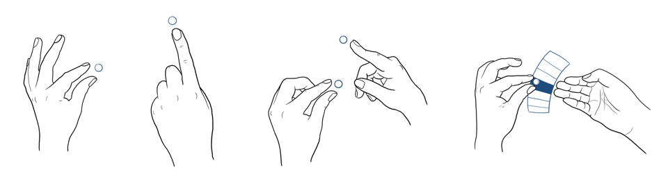

Gestural Interactions
Bachelor Thesis Project
An exploratory project on understanding gestural interactions and their potential application real world scenarios.
This project was completed in partial fulfilment of credits for the Integrated Masters Program in Interaction Design at IDC School of Design, IIT Bombay. The duration of the project was from February 2019 to June 2019.
WhyGestures are innate to humans. As infants, we learn to gesticulate before using speech. Speech is formed as an association of gestures to words. Gestures also act as a complementary reinforcement to our dialogue. Using gestures as an input in HCI would massively add to the richness of our communication, while also making interacting with computers more accessible.
WhatThe goal of the project is to explore different methods gestural input methods and expand upon a few scenarios to determine the utility of gestures as a tool for performing primary tasks and possibility to increase efficiency while performing secondary or minor tasks.
HowTwo scenarios were explored. The first, at an office place where gestures could be used as a means of exercising while not hindering the work the employees need to do. This was shown as a Wizard or Oz prototype. The second, to teach social gestures to autistic children through social stories whose narrative is controlled by gestures.
What are gestures?Gestures can be defined as a form of nonverbal communication in which bodily actions are used to communicate messages either in place off or in conjunction with speech. Any discernible movement that can be captured and classified falls under the umbrella of gestures. Where can gestures be used?An initial study of use cases gave me a brief sense of where gestures are being implemented. These various use cases could be classified into four categories: Hygiene, Safety, and Fun.What are gestural interactions?Gestural Interactions encompass a variety of input modalities. They can be captured by a large number of sensors to accommodate for the myriad of ways humans interact with the world around them. There are three broad techniques through which gestures are input into a computer:Touch based gestures

Motion based gestures Sensor based gestures This is the basic protocol for how a computer understands a gestures.Literature reviewThree types of papers were reviewed. Elicitation studies [1, 2, 3, 4, 5, 6], Classification of gestures [1, 7, 8], and Sensing methods [9, 10, 11]. While Sensing methods includes touch as a sensory input [12, 13], I chose not to take this route as it would align with the design process yielding a more conventional solution and would undermine the goal of the project which was to explore and learn through trials. I chose to explore the potential for sensor based gestures as I also wanted to get grasp of Arduino and build a working prototype. This was also done to get an idea about the limitations of the information sensors can capture. ExplorationsThere were two phases to the explorations. The first phase involved experimenting with sensors. Sensors explored for prototyping basic gestures The second with scenarios where gestures could play a significant role. Initially, the scenarios looked at were situations where gestures could be used to perform a secondary task.Scenarios explored for gesture use cases But the feedback I received for these were that I was attempting to solve problems that probes didn’t exist, and that there was a lack of social concern. Final conceptThe goal was to take forward my learnings from my exploration of the sensors and feedback from the initial round of scenario ideation forward and develop it. I decided to explore two situations: one where gestures are used more naturally and one where the use is forced. Gestures to aid autistic children in learning socially accepted gesturesAutism is a developmental disorder that seriously impairs the individual’s ability to communicate and interact with others. It is known as Autism Spectrum Disorder in the medical community. It impacts the nervous system and affects the overall cognitive, emotional, social and physical health of the affected individual. Children in this group often find it difficult to comprehend and initiate social interactions. One of these social cues is gesturing to others. Children learn socially accepted gestures through imitating adults. They copy other’s actions, interactions with objects, body movements and sounds during infancy. This helps them learn how to express interest, share emotions in their caregiver and others around them. Children with autism face difficulty in imitating people around them and this affects their language, play skills, peer play and joint attention development. One commonly used method of teaching autistic children gestures and other social cues is through social stories. Social stories is a technique invented by Carol Gray to help autistic children learn social skills through simple stories. These stories are directed at teaching children how to perform one particular action, and by repeated showing of these stories, children just might pick up on the behaviour. The social story I chose to prototype is one where a child learns how to ask for toys at school. This scenario can be extended to situations of children asking for all their needs from caregivers. The gestures prototyped are from Natural Behaviour Therapy. Currently, this is quickly becoming an outdated approach, with newer research having refined methods to help autistic children express themselves. However, with the limited timeframe of the project, I decided to use this after consulting with therapists. The narrative follows a Dora the Explorer style form of story telling, where the child has to answer questions to move the story forward. The questions are framed such that the answer corresponds to a gesture, which the system recognises when input correctly, to move the story forward. Below is the flow of the story. The scenario of this being play time is established with Rahul being asked to point and pick the toy he wants to play with He now has to indicate which ball he wants with a hand gesture After he receives the ball, he can say thank you by throwing his hands in the air The gestures were input with an MPU6050 accelerometer Gyroscope connected to an Arduino Nano. The story was animated using Adobe AfterEffects and prototyped on Unity. Gestures to increase mobility during office hoursThis scenario involved forced use of gestures to allow for exercising of muscles during work hours. Most desk jobs involve people sitting at their desks, typing away on their computers for long hours. This can lead to several problems including carpal tunnel syndrome and full body stiffness. The goal was to provide relief through another commonly used tool in office spaces, a stress ball, by using it as a gestural input device.
Gestures that can be performed with the MagicBall While the Wizard of Oz prototype shows what is possible, a major drawback was that the ball could have been replaced by any other object and the interactions would largely have remained the same. Future iterations on this idea would include using the ball in a more natural manner, interacting with it by squishing, bouncing, rolling, and spinning among others for increased scope of possible solutions. ConclusionGestures are a heavily researched upon space and will continue to be so. There are several problems with pursuing gestural research like memorability of gestures, discrete classification, and more that need to be solved. With the maturing use of Machine Learning in this space, we are likely to see gestures beyond the touch surfaces of our phones become more common place. Additionally, we will also see gestures become an important tool to help bridge the gap in communicating with people with different abilities. Personally, from this project, I am glad I got to prototype and build my first interactive Proof of Concept. While I was unable to integrate subtler gestures into my design due the lack of prototyping skills, it is a topic that has me pumped and rearing to return to it after I gain more knowledge in prototyping such interactions. References
“User-Defined Gestures for Surface Computing - University of ...." 9 Apr. 2009, https://faculty.washington.edu/wobbrock/pubs/chi-09.02.pdf
"User Elicitation on Single-hand Microgestures - ACM Digital Library." 7 May. 2016, https://dl.acm.org/citation.cfm?id=2858589
"User-defined gestures for augmented reality - ACM Digital Library." 27 Apr. 2013, https://dl.acm.org/citation.cfm?id=2468527
"Gesture Elicitation Studies for Mid-Air Interaction: A Review - MDPI." 29 Sep. 2018, https://www.mdpi.com/2414-4088/2/4/65/pdf
"A study on the use of semaphoric gestures to support secondary task ...." 2 Apr. 2005, http://doi.org/10.1145/1056808.1057067
"Understanding Mid-Air Hand Gestures: A Study of Human Preferences ...." 7 Nov. 2012, https://www.microsoft.com/en-us/research/publication/understanding-mid-air-h and-gestures-a-study-of-human-preferences-in-usage-of-gesture-types-for-hci/
"A taxonomy of Gestures in Human Computer Interaction - ePrints Soton." https://eprints.soton.ac.uk/261149/1/GestureTaxonomyJuly21.pdf